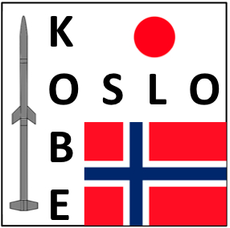
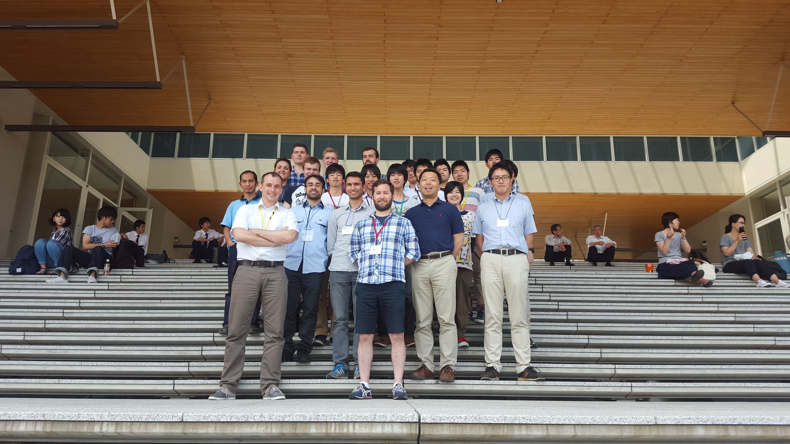

Teaching
At the University of Oslo, Department of Mathematics, I have been teaching the following courses:
Japan-Norway Partnership

The Japanese-Norwegian Partnership in Space Simulations between the University of Oslo and Kobe University provides a unique study opportunity for students interested in space science and numerical modeling. The Kobe-Oslo project is centered on numerical simulations of space related problems, such as interaction between sounding rockets and plasma, cometary environment, asteroids and lunar surfaces, or plasma turbulence. Participating students learn how to use and create large scale numerical models, run them on supercomputers, and relate their results to ongoing space missions. The workshops are biannual, one in Norway and one in Kobe, Japan. Picture below from the first workshop in Kobe, in June 2015.
The Kobe-Oslo project is funded through the UTFORSK 2016 Partnership Programme administered by the Norwegian Centre for International Cooperation in Education (SIU).

Students
Current and previous students of mine are listed below.
PhD Students
-
Kristian Valen-Sendstad Computational Cerebral Hemodynamics (2008 - 2011)
-
Magnus Vartdal Numerical Simulation of Flow Around an Oscillating Circular Cylinder and Development of Level Set Based Numerical Methods for Two-Phase Flows (2009 - 2013)
-
Karen Helene Støverud Relation Between the Chiari I Malformation and Syringomyelia From a Mechanical Perspective (2009 - 2014)
-
Miroslav Kuchta Preconditioners for Singular Problems and Coupled Problems with Domains of Different Dimensionality (2012 - 2016)
-
Diako Darian (2014 - 2019) Plasma-object interactions
-
Tormod Landet (2014 - )
-
Sigvald Marholm (2014 - )
-
Christopher Friedemann (2016 - )
-
Anna Pitterskaya (2019 - )
Master students
-
Magnus Vartdal Numerical modelling of aerosol dispersion inside a rotating aerosol chamber (2007 - 2009)
-
Jørgen Myre Modeling Turbulent Boundary Layers with Elliptic Relaxation (2009 - 2011)
-
Adrian Roaldssønn Analysis of a system of elliptic partial differential equations and its possible boundary conditions when discretized with Hermite and Lagrange elements (2010 - 2012)
-
Millad Nour CFD simulations of flow in bent pipe at high Reynolds numbers conditions (2013 - 2015)
-
Ola Hagemann Cool down of subsea dead-leg with a cold spot - experimental and numerical heat transfer analysis (2013 - 2015)
-
Joakim Bø Implementation and assessment of subgrid-scale models for large eddy simulations of incompressible turbulent flows (2013 - 2015)
-
Per Thomas Haga Numeriske simuleringer av adveksjons-dominert skalar-blanding anvendt på CSF-strømning og medikamenttransport (2013 - 2015)
-
Daniel A. Mo Søreide Houshmand CFD simulations in idealized expanded bifurcation geometry (2013 - 2015)
-
Daniel J. Tarplett En numerisk analyse av den seismiske bølgeligningen i forskjellige lag med materialer ved bruk av element metoden i fenics (2013 - 2015)
-
Aslak Bergersen Investigating the Link Between Patient-specific Morphology and Hemodynamics: Implications for Aneurism Initiation? (2114 - 2016)
-
Jørgen Dyremyhr Tyvand Computational fluid dynamics simulations of gravity wave flows (2015 - 2017)
-
Guttorm Kvaal Numerical Simulations of Pharmaceutical Particles Depositing in the Human Respiratory System (2015 - 2017)
-
Andreas Strøm Slyngstad “Verification and Validation of a Monolithic Fluid-Structure Interaction Solver in FEniCS” (2015 - 2017)
-
Sebastian Gjertsen Development of a Verified and Validated Computational Framework for Fluid-Structure Interaction: Investigating Lifting Operators and Numerical Stability (2015 - 2017)
-
Anna Piterskaya Spectral investigation of annular flow (2016 - 2018)
-
Anders Utnes Computational analysis of a drag reducing cone grid (2017 - 2018)
-
Karl Jacobsen The dead water phenomenon - A computational fluid dynamics study (2018)
-
Peter Even Killingstad A study of dead water resistance Reynolds Averaged Navier Stokes simulations of a barge moving in stratified waters (2018)
-
Henrik Kjeldsberg Aasen Investigating the Interaction Between Morphology of the Anterior Bend and Aneurysm Initiation (2016-2018)
-
Trym Erik Nielsen (2018 - )